Web Developer
Hi, I want to build a web app.
require.js
Backbone
Backbone Marionette
jQuery
Modernizr
moment.js
Dust templates
PhantomJS
Jasmine
Things should be clear!
Dart SDK
Packages
Unit test
Angular
Intl
your package!
Lightning Tour
class Hug {
Familiar
num strength;
Hug(this.strength)
Terse
Hug operator +(Hug other) {
return
new Hug(strength + other.strength);
}
Operator overriding
void patBack({int hands: 1}) {
// ...
}
Named, optional params w/ default value
String toString() =>
"Embraceometer reads $strength";
}
One-line function
String interpolation
main() {
var hug = new Hug(10);
var bigHug = hug + new Hug(100);
bigHug.patBack(hands: 2);
print(bigHug);
// Embraceometer reads 110
}
var button = new ButtonElement();
button.id = 'fancy';
button.text = 'Click Point';
button.classes.add('important');
button.onClick.listen((e) => addTopHat());
parentElement.children.add(button);
var button = new ButtonElement()
..id = 'fancy'
..text = 'Click Point'
..classes.add('important')
..onClick.listen((e) => addTopHat());
parentElement.children.add(button);
class Registrator {
doIt(User user) { … }
}
var reg = new Registrator();
reg.doIt(user); // implied!
class Registrator {
call(User user) { … }
}
var reg = new Registrator();
reg(user); // just call it
@Extreme(ftw: true)
class Awesome {
@upHigh int highFives;
}
Clean semantics and behavior
Examples:
- Only true is truthy
- There is no undefined, only null
- No type coercion with ==, +
- Throw error on missing method
class AwesomeButton {
AwesomeButton(button) {
button.onClick.listen((Event e) =>
this.atomicDinosaurRock());
}
atomicDinosaurRock() {
/* ... */
}
}
Async
catService.getCatData("cute", (cat) {
catService.getCatPic(cat.imageId, (pic) {
imageWorker.rotate(pic, 30, (rotated) {
draw(rotated);
});
});
});
Scary
catService.getCat("cute") // returns a Future
.then((cat) =>
catService.getCatPic(cat.imageId))
.then((pic) =>
imageWorker.rotate(pic, 30))
.then((rotated) => draw(rotated))
.catchError((e) => print("Oh noes!"));
D.R.Y.
Structure
Testability
Structure: Model-View-Controller
Modelclass Person { String name; }
View<div person>
Hi, {{ctrl.person.name}}
</div>
Controller@NgController(
selector: '[person]',
publishAs: 'ctrl'
)
class Controller {
Person person = new Person();
Controller() {
person.name = 'Bob';
}
}
Controllers:
- Expose model to view
- Handle user interaction
- Update model to change the view
Directives<div ng-repeat='item in cart.items'>
<span ng-bind='item.name'></span>
<button ng-click='cart.delete($index)'>
Delete
</button>
</div>
Filters:
<p>{{ name | reverse }}</p>
Filters can take parameters:
<p>{{ amount | currency:us }}</p>
Filters can chain:
<p>{{ msg | embiggen | shoutify }}</p>
Filter@NgFilter(name: 'reverse')
class Reverser {
String call(String input) {
if (input == null) return '';
return input.split('')
.reversed.join('');
}
}
Dependency Injection@NgInjectableService()
class Users { /* … */ }
Usage:
class Login {
Users users;
Login(this.users);
Routing
class AppRouteInitializer implements RouteInitializer {
init(Router router, ViewFactory view) {
router.root
..addRoute(
name: 'overview',
path: '/overview',
defaultRoute: true,
enter: view('views/overview.html'))
..addRoute(name: 'analytics',
path: '/analytics',
enter: view('views/analytics.html'));
}
}
First appearance in AngularDart!
Components
ngComponent
Controller
Template
Shadow DOM
Custom Element Name
@NgComponent(
selector: 'rating',
templateUrl: 'packages/ng_rating/rating.html',
cssUrl: 'packages/ng_rating/rating.css',
publishAs: 'cmp'
)
class RatingComponent {
@NgTwoWay('rating')
int rating = 0;
<rating max-rating="5" rating="item.rating">
</rating>
Questions?